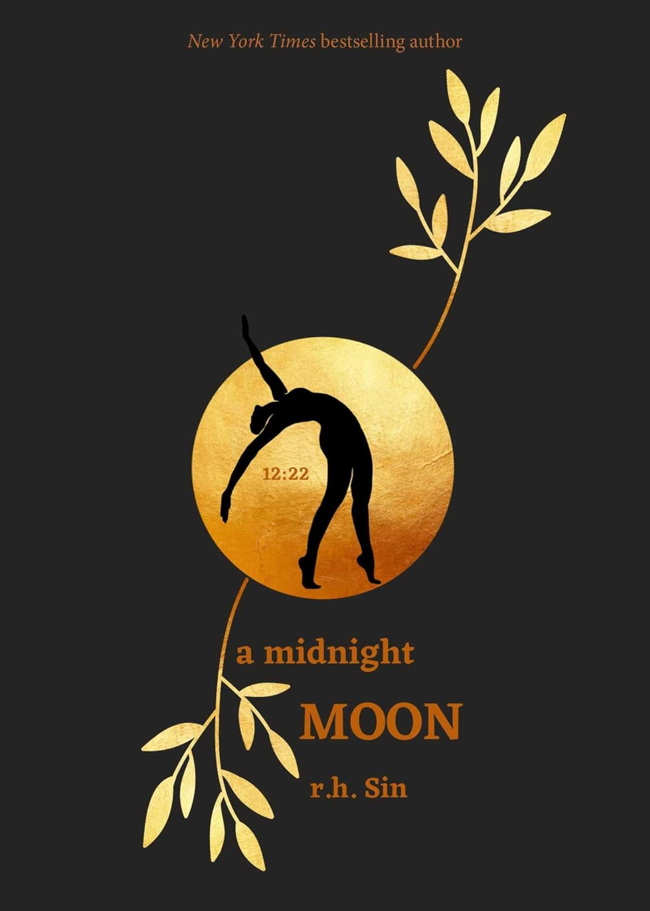

Posted on December 10th, 2023
Diving into my favorite books is like jumping into a rollercoaster of feels and adventures. I mean, seriously, these books are like my ride-or-die buddies, taking me on wild trips to places only possible in my imagination. Whether I'm cozying up with a classic or getting tangled up in the plot twists of a modern masterpiece, these books aren't just stories—they're like my partners in crime, making me laugh, cry, and think about life in totally unexpected ways. It's like having a bunch of cool friends on my bookshelf, always ready to shake up my world whenever I need a break from reality. You can find this book is on Amazon.com

Harry Potter has never even heard of Hogwarts when the letters start dropping on the doormat at number four, Privet Drive. Addressed in green ink on yellowish parchment with a purple seal, they are swiftly confiscated by his grisly aunt and uncle. Then, on Harry's eleventh birthday, a great beetle-eyed giant of a man called Rubeus Hagrid bursts in with some astonishing news: Harry Potter is a wizard, and he has a place at Hogwarts School of Witchcraft and Wizardry. An incredible adventure is about to begin!
In the ruins of a place once known as North America lies the nation of Panem, a shining Capitol surrounded by twelve outlying districts. The Capitol keeps the districts in line by forcing them all to send one boy and one girl between the ages of twelve and eighteen to participate in the annual Hunger Games, a fight to the death on live TV.Sixteen-year-old Katniss Everdeen regards it as a death sentence when she steps forward to take her sister's place in the Games. But Katniss has been close to death before-and survival, for her, is second nature. Still, if she is to win, she will have to start making choices that weigh survival against humanity and life against love.
A Midnight Moon is a moving collection of poetry from celebrated bestselling author r.h. Sin. With the honesty and transparency that he has become known for, Sin takes readers on a journey of goodbyes, the unforgivable, and secret treks to find solace beneath the moon. A poetic journey through sleepless nights, A Midnight Moon is r.h. Sin' best work yet. 